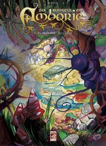

La Réunion underground à livre ouvert
Il y a deux ans, je profitais de la fin du festival de BD d'Angoulème pour vous parler de la grande aventure de la bande dessinée réunionnaise. Après une présentation du Margouillat, je souhaitais encore beaucoup d'albums réunionnais dans les bacs pour les années à venir. Deux ans après, un nouvel auteur présente un album Réunionnais sorti chez un éditeur Réunionnais: Epsilon. Il s'agit de Shovel Tattoos.
 Un bracelet d'Agliffe (album présenté ici)est le premier tome d'une série qui devrait en comporter six. Dans sa saga Six runkels en Amborie, Shovel Tattoos nous emmène dans un univers fantastique dont la porte d'entrée est un trou dans le cirque de Salazie. C'est en essayant de retrouver son mobile qu'un gamin de 12 ans va se retrouver entrainé dans cet univers underground.
Shovel Tattoos, l'auteur est Picard de naissance mais vit à la Réunion depuis 10 ans. Shovel Tattoos, c'est un pseudo évidemment, avec sa barbe et ses tatouages, on le croit directement sortit d'un album de Litteul Kevin, de son ami Coyote. Dans le civil, il s'appelle Mario Sénéchal et il est aussi tatoueur et enseignant. Sur la toile, il est shovel et anime son blog avec vidéos, photos et comptes-rendus de dédicaces.
D'autres livres ? tout un catalogue!
Pour compléter mon article hivernal, je vous propose aussi de faire un tour sur le site de l'Éditeur en question: Epsylon. Petit éditeur réunionnais qui liste son catalogue en une page: albums jeunesse, Bandes dessinées, livres de cuisine ou guide pratique, tous les titres ont une bonne odeur d'Océan Indien.
Et si ce catalogue ne vous suffit pas, allez donc faire un tour sur Livranoo, Cette librairie en ligne (maintenant hors ligne) est spécialisée dans la littérature de la Réunion. Elle est d'ailleurs basée à la Réunion mais elle livre aussi en Métropole et en Corse. On retrouve dans ses pages, les livres que je vous ai déjà présenté et plein d'autres … que je vous présenterais peut-être un autre jour…
Vous aimez lire des livres, lisez aussi :
- Le Margouillat fait des bulles
- Daniel Vaxelaire écrit pour les enfants
- Trop de livres pour un seul été
- La Grande guerre prend la Réunion en grippe